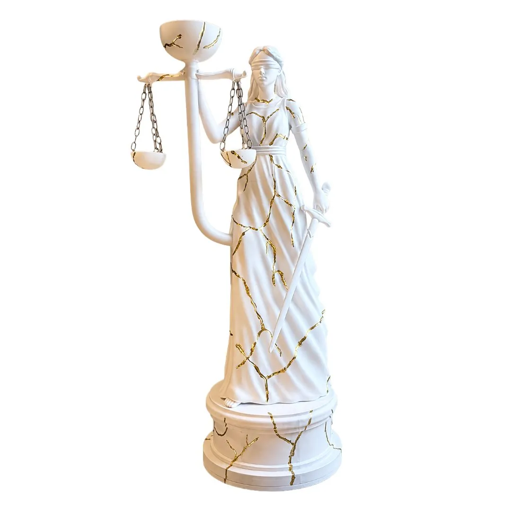
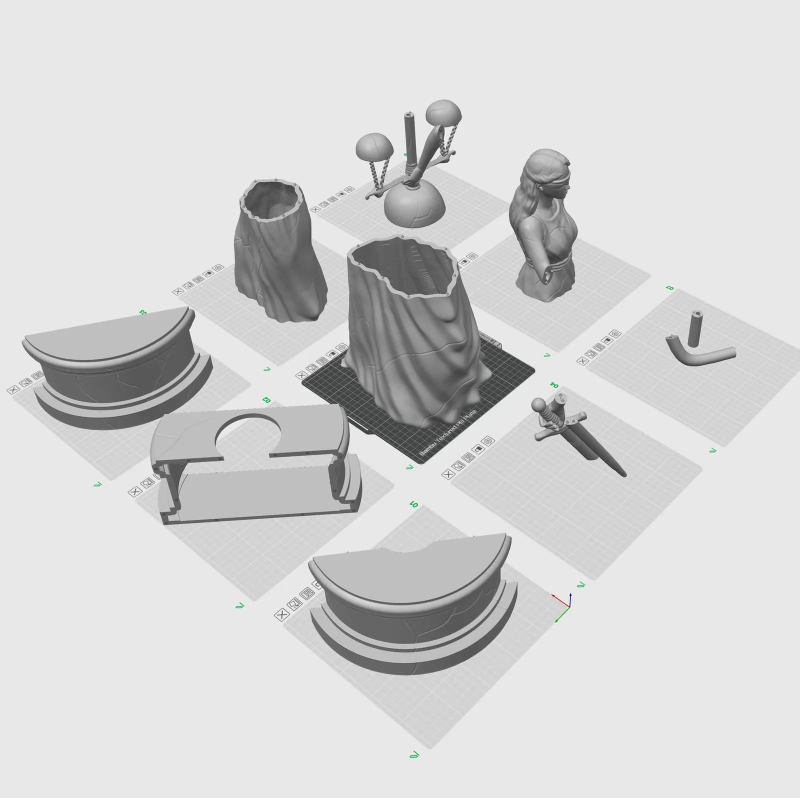
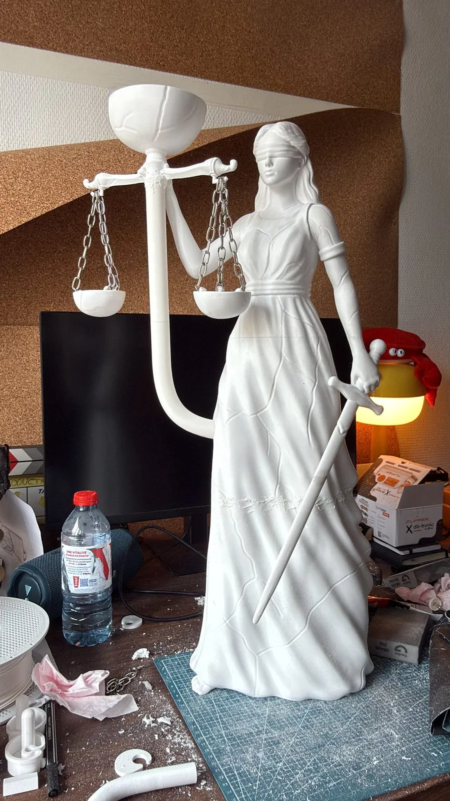
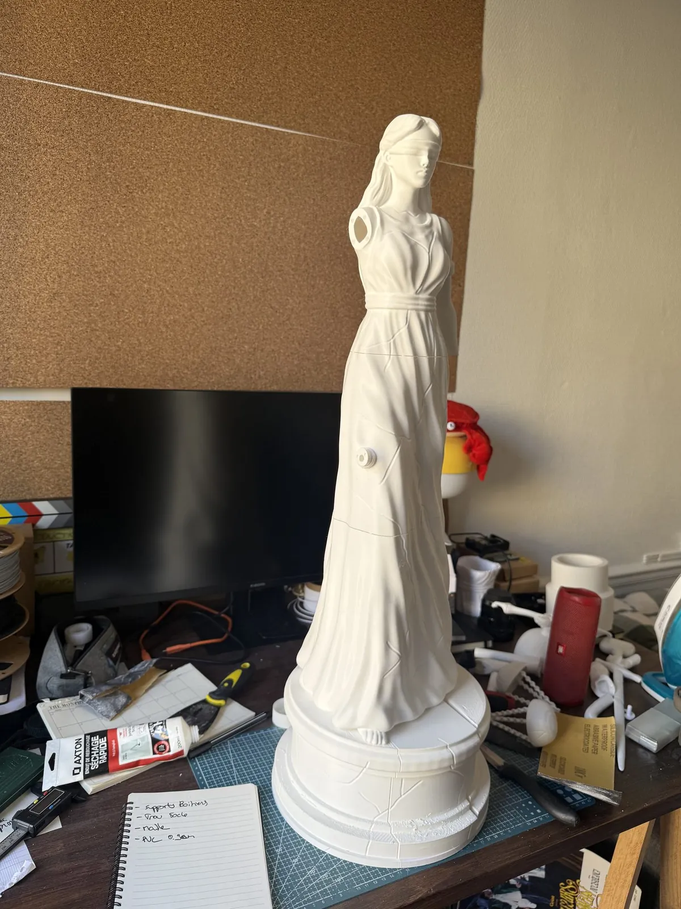
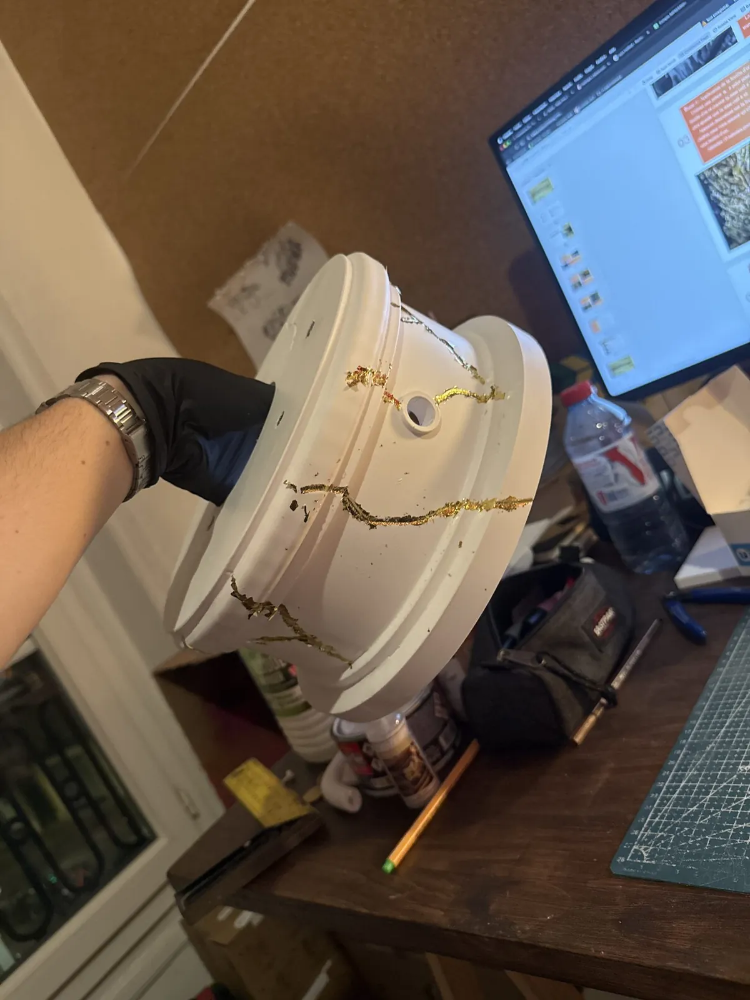
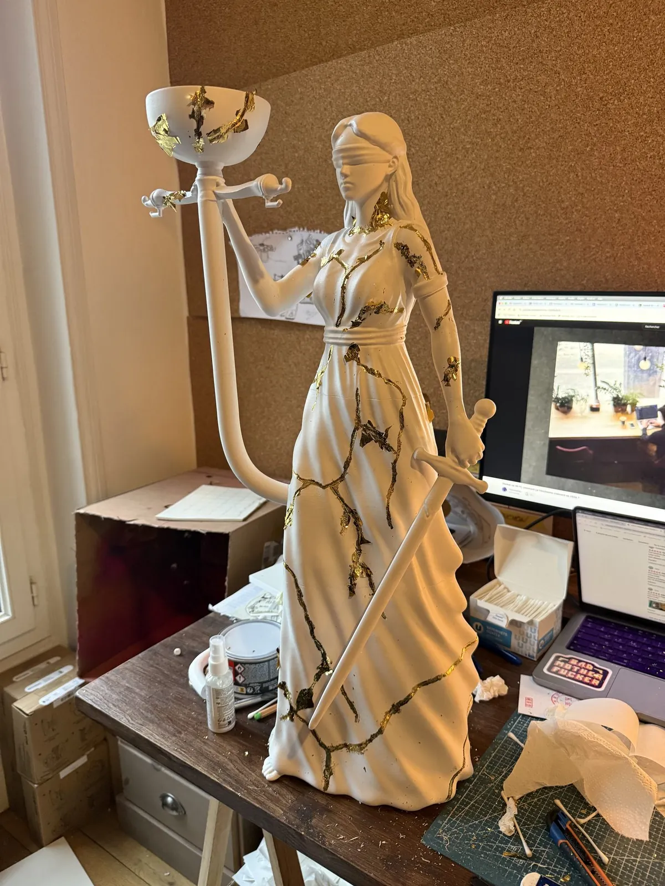
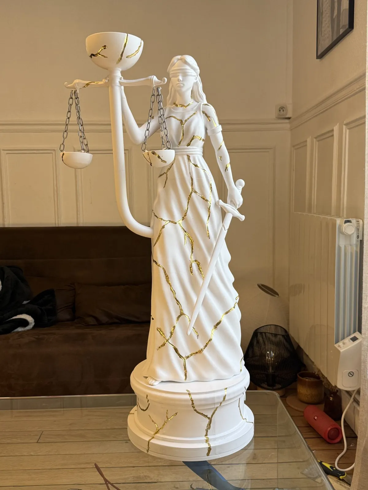

Une statue de la Justice imprimée en 3D pour un décor de chicha, finie en blanc et veinée d'or.
La pièce
La statue est découpée en plusieurs éléments pour l'impression, puis assemblée.
La finition
Apprêt blanc, puis veines dorées peintes à la main sur toute la surface.





